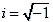

The amplitude function may contain the factor . In this case the amplitude is multiplied by its complex conjugate to obtain the probability distribution. Since we shall deal only with real functions we may ignore this complication.